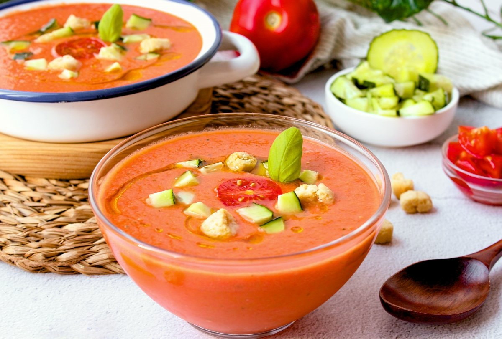

Gazpacho - Egea's Kitchen
Ingredientes
- 1 kg de tomates maduros
- 1 pepino
- 1 pimiento verde
- 1 diente de ajo
- Aceite de oliva
- Vinagre y sal
- Agua fría al gusto

Pasos para su elaboración
- Lava y trocea las verduras.
- Tritura todos los ingredientes en una batidora.
- Añade agua fría hasta obtener la textura deseada.
- Rectifica de sal y vinagre.
- Sirve bien frío.
Descargar receta en PDF